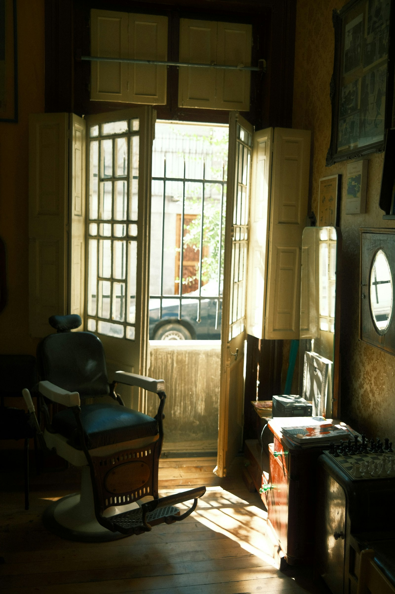

Tijera, navaja y toalla caliente a una cuadra del río. Si toca esperar, hay café y un tablero de ajedrez.
Reservar turno por WhatsAppLunes a sábado, de 9:00 a 20:00.
Numa Pompilio Llona 128, subiendo del malecón.
Concepto de portada · marca ficticia

Toca una hora y te la apartamos por WhatsApp.
Hoy atienden Don Wilson, que lleva 31 años con la tijera, Mayra y Kevin. Sin cita de 14:00 a 16:00, si hay silla libre.